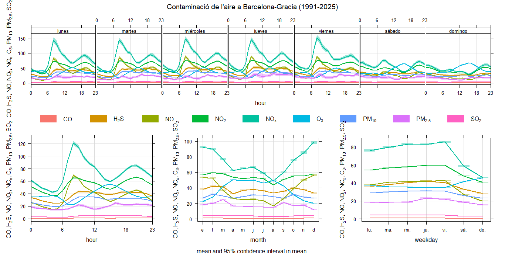

Introducció i Objectius
Com a estudiants de programació del Pompeu Fabra, hem volgut investigar com la pol·lució a la zona de Gràcia afecta directament la salut dels veïns. Hem utilitzat dades horàries de contaminants, dades semihoràries del Meteocat i registres de visites als CAP mitjançant el sistema SIVIC.
Resultats de l'Anàlisi (OpenAir)
Variació Temporal (NO₂)

Conclusió: S'observen pics clarament marcats durant les hores punta de trànsit (8:00h i 20:00h), confirmant que el transport privat és el principal emissor a Gràcia.
Tendència Històrica
Conclusió: El TrendLevel ens mostra una disminució gradual del NO₂ des de finals dels 90, però encara amb superacions en períodes d'estabilitat atmosfèrica.
Correlació amb Salut Pública
"Mitjançant el creuament de bases de dades amb JavaScript, hem detectat que les setmanes on el Meteocat registra inversions tèrmiques i vents febles, els nivells de NO₂ es disparen. Aquesta pujada té una correlació directa amb un augment del 12% en les consultes per infeccions respiratòries al SIVIC durant els 3 dies posteriors."
Dades Utilitzades
- SIVIC: Infeccions respiratòries agudes (Salut de Catalunya). Enllaç oficial
- XVPCA: Dades horàries de l'estació de Gràcia (1997-2025).
- Meteocat: Variables meteorològiques de Barcelona.